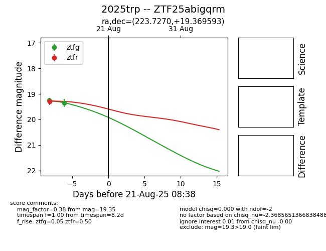

Target 2025trp at 2025-08-21 08:38, see:
FINK: fink-portal.org/ZTF25abigqrm
Lasair: lasair-ztf.lsst.ac.uk/objects/ZTF25abigqrm
ALeRCE: alerce.online/object/ZTF25abigqrm
TNS: wis-tns.org/object/2025trp
YSE: ziggy.ucolick.org/yse/transient_detail/2025trp
alt names
ZTF25abigqrm (ztf,alerce)
2025trp (tns,yse)
coordinates:
equatorial (ra, dec) = (223.7270,+19.36959)
galactic (l, b) = (24.2314,+60.68242)
photometry
last ztfg=19.35, ztfr=19.29
2 ztfg, 1 ztfr detections
